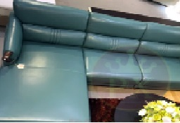

XU HƯỚNG THIẾT KẾ
Phong cách hiện đại

Phong cách này nhằm gợi lên sự thoải mái, hoài cổ và truền thống. Chắc chắn đây sẽ là một trong ngững xu hướng được ưa chuộng vào năm 2022.
Phong cách cổ điển

Phong cách nội thất tân cổ điển chú trọng sự cân bằng và bên cạch đó còn đem lại vẻ quý phái, sang trong và lịch lãm vượt thời gian
Phong cách kết hợp

Mang vẻ đẹp sang trọng, tinh tế nhưng vẫn rất hiện đại, mới mẻ các thiết kế nội thất tân cổ điển được ứng dụng trong rất nhiều công trình kiến trúc